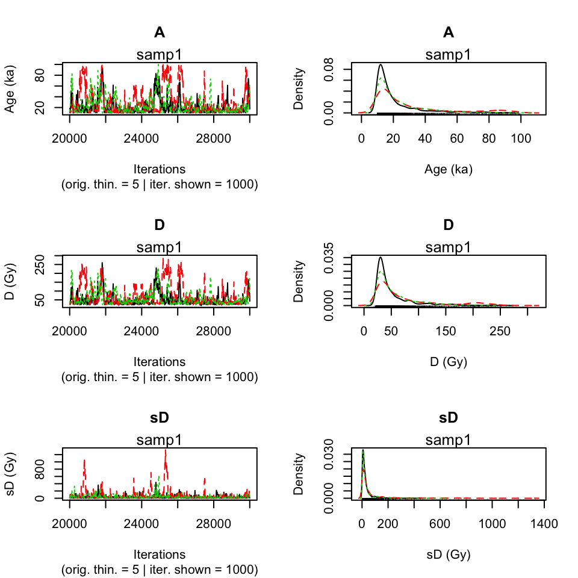
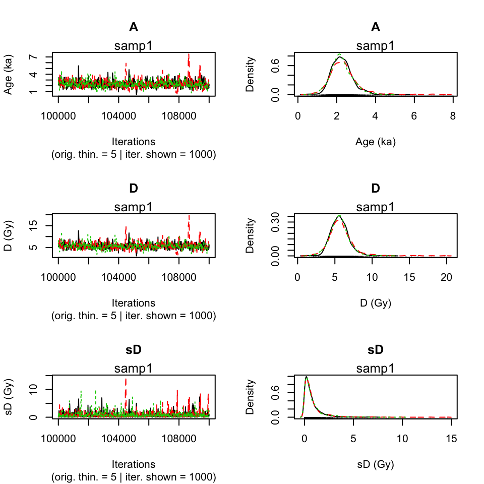
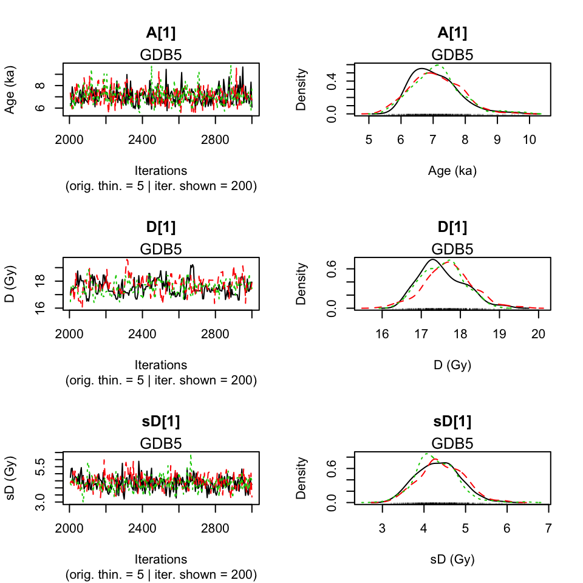
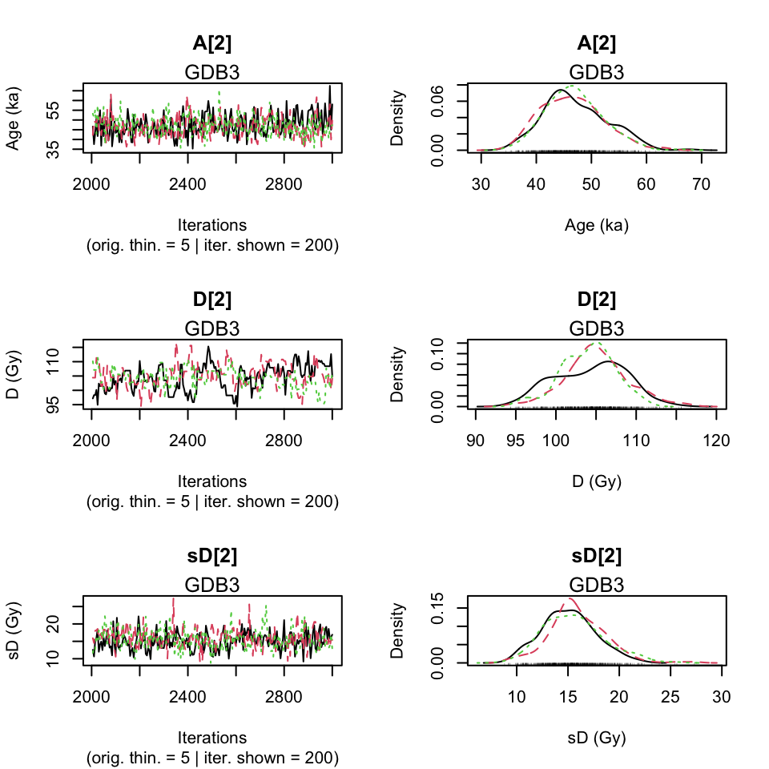
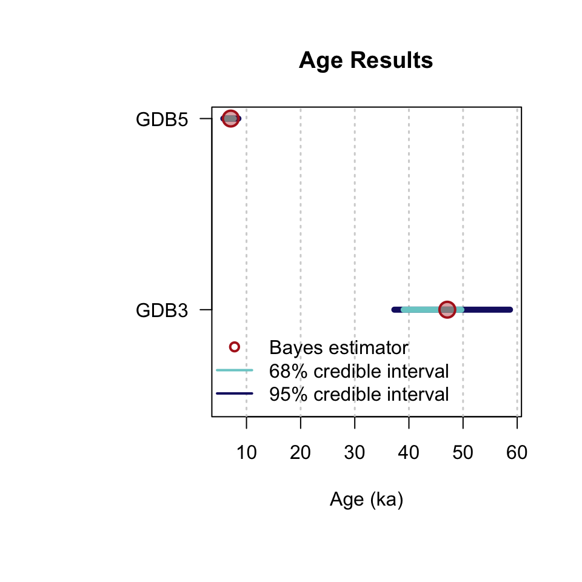
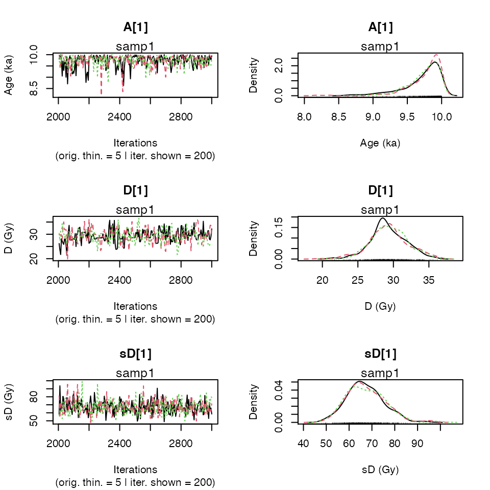
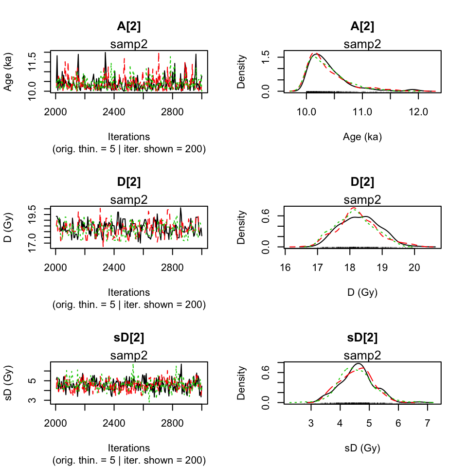
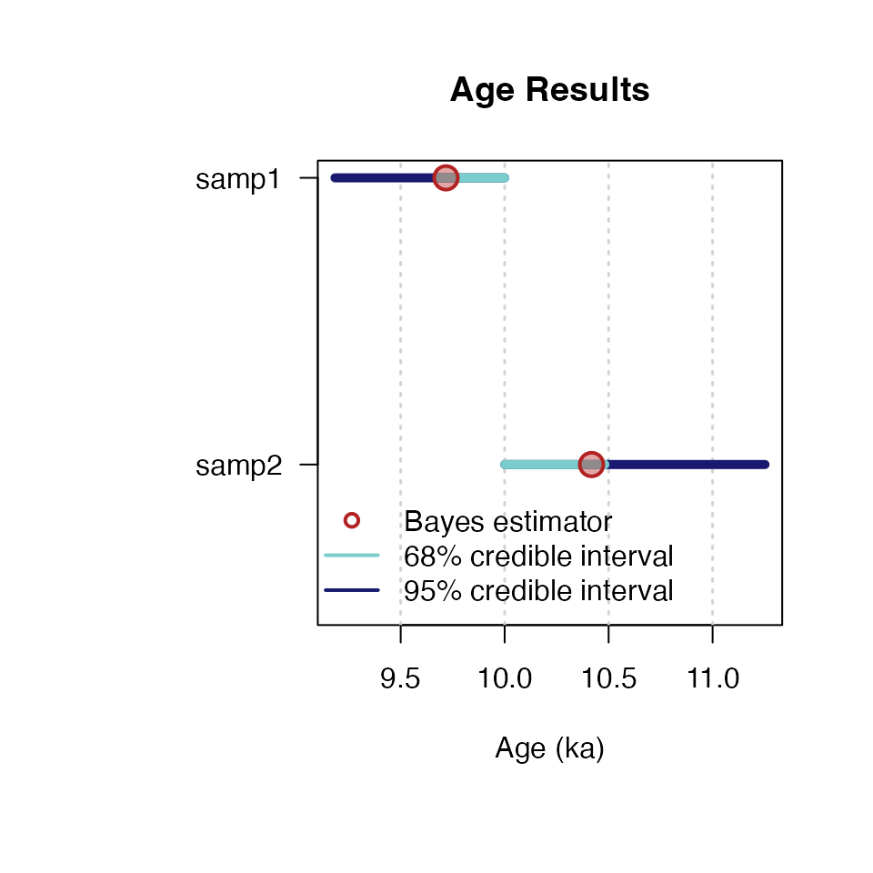

‘BayLum’ provides a collection of various R functions for Bayesian analysis of luminescence data. Amongst others, this includes data import, export, application of age models and palaeodose modelling.
Data can be processed simultaneously for various samples, including the input of multiple BIN-files per sample for single grain (SG) or multigrain (MG) OSL measurements. Stratigraphic constraints and systematic errors can be added to constrain the analysis further.
For those who already know how to use R, ‘BayLum’ won’t be difficult to use, for all others, this brief introduction may be of help to make the first steps with R and the package ‘BayLum’.
If you read this document before having installed R itself, you should first visit the R project webpage and download and install R. You may also consider installing Rstudio, which provides an excellent desktop environment.
However, what is needed is the external software JAGS (Just Another Gibs Sampler). Please visit the JAGS webpage and follow the install instructions. Now you are nearly ready to work with ‘BayLum’. Please run the following two R code lines to install ‘BayLum’ on your computer if necessary and load it if it is already installed.
if(!require("BayLum"))
install.packages("BayLum", dependencies = TRUE)Alternatively, you can load an already installed R package (here `BayLum’) into your session by using the following call.
library(BayLum)Let us consider the sample is named samp1, which is the example dataset coming with the package. All information related to this sample is stored in a subfolder called also samp1. To test the package example, first, we add the path of the example dataset to the object path.
path <- paste0(system.file("extdata/", package="BayLum"),"/")Please note that for your own dataset (i.e. not included in the package) you have to replace this call by something like:
path <- "Users/Master_of_luminescence/Documents/MyFamousOSLData"In our example the folder contains the following subfolders and files:
| 1 | FER1/bin.BIN |
| 2 | FER1/Disc.csv |
| 3 | FER1/DoseEnv.csv |
| 4 | FER1/DoseSource.csv |
| 5 | FER1/rule.csv |
| 6 | samp1/bin.BIN |
| 7 | samp1/DiscPos.csv |
| 8 | samp1/DoseEnv.csv |
| 9 | samp1/DoseSource.csv |
| 10 | samp1/rule.csv |
| 11 | samp2/bin.BIN |
| 12 | samp2/DiscPos.csv |
| 13 | samp2/DoseEnv.csv |
| 14 | samp2/DoseSource.csv |
| 15 | samp2/rule.csv |
See “What are the required files in each subfolder?” in the manual of Generate_DataFile function for the meaning of these files.
To import your data, simply use the function Generate_DataFile():
DATA1 <-
Generate_DataFile(
Path = path,
FolderNames = "samp1",
Nb_sample = 1,
verbose = FALSE
)The import may take a while and can become annoying if you want to play with the data. In such situations, it makes sense to save your imported data somewhere else before continuing.
To save the obove imported data on your hardrive use
save(DATA1,file="YourPath/DATA1.RData")To load the data use
load(DATA1,file="YourPath/DATA1.RData")To show the overall structure of the data generated from the BIN-file and the associated CSV-files, the following call can be used:
str(DATA1)List of 9
$ LT :List of 1
..$ : num [1, 1:7] 2.042 0.842 1.678 3.826 4.258 ...
$ sLT :List of 1
..$ : num [1, 1:7] 0.344 0.162 0.328 0.803 0.941 ...
$ ITimes :List of 1
..$ : num [1, 1:6] 15 30 60 100 0 15
$ dLab : num [1:2, 1] 1.53e-01 5.89e-05
$ ddot_env : num [1:2, 1] 2.512 0.0563
$ regDose :List of 1
..$ : num [1, 1:6] 2.3 4.6 9.21 15.35 0 ...
$ J : num 1
$ K : num 6
$ Nb_measurement: num 16It reveals that DATA1 is basically a list with 9 elements:
| Element | Content |
|---|---|
DATA1$LT |
Lx/Tx values from each sample |
DATA1$sLT |
Lx/Tx error values from each sample |
DATA1$ITimes |
Irradiation times |
DATA1$dLab |
The lab dose rate |
DATA1$ddot_env |
The environmental dose rate and its variance |
DATA1$regDose |
The regenarated dose points |
DATA1$J |
The number of aliquots selected for each BIN-file |
DATA1$K |
The number of regenarted dose points |
DATA1$Nb_measurement |
The number of measurements per BIN-file |
To get an impression on how your data look like, you can visualise them by using the function LT_RegenDose():
LT_RegenDose(
DATA = DATA1,
Path = path,
FolderNames = "samp1",
SampleNames = "samp1",
Nb_sample = 1,
nrow = NULL)Note that here we consider only one sample, and the name of the folder is the name of the sample. For that reason the argumetns were set to FolderNames = samp1 and SampleNames = samp1.
For a multi-grain OSL measurements, instead of Generate_DataFile(), the function Generate_DataFile_MG() should be used whith similar parameters. The functions differ by their expectations: Disc.csv instead of DiscPos.csv file for Single-grain OSL Measurements. Please check type ?Generate_DataFile_MG for further information.
To compute age of the sample samp1, you can run the following code:
Age <- Age_Computation(
DATA = DATA1,
SampleName = "samp1",
PriorAge = c(10,100),
distribution = "cauchy",
LIN_fit = TRUE,
Origin_fit = FALSE,
Iter = 10000)Compiling model graph
Resolving undeclared variables
Allocating nodes
Graph information:
Observed stochastic nodes: 6
Unobserved stochastic nodes: 9
Total graph size: 139
Initializing model
>> Sample name <<
----------------------------------------------
samp1
>> Results of the Gelman and Rubin criterion of convergence <<
----------------------------------------------
Point estimate Uppers confidence interval
A 1 1
D 1 1
sD 1.03 1.04
---------------------------------------------------------------------------------------------------
*** WARNING: The following information are only valid if the MCMC chains have converged ***
---------------------------------------------------------------------------------------------------
parameter Bayes estimate Credible interval
----------------------------------------------
A 24.558
lower bound upper bound
at level 95% 10.01 68.47
at level 68% 10.01 25.37
----------------------------------------------
D 61.01
lower bound upper bound
at level 95% 20.37 166.57
at level 68% 22.78 65.29
----------------------------------------------
sD 36.888
lower bound upper bound
at level 95% 0.3 153.04
at level 68% 0.57 32.98 This works also if DATA1 is output of Generate_DataFile_MG().
If MCMC trajectories did not converge, you can add more iteration at the parameter Iter in the function Age_Computation(), for example Iter = 20000 or Iter = 50000.
To increase the precision of prior distribution, if not specified before. For example: PriorAge= c(0.01,10) for a young sample and PriorAge = c(10,100) for an old sample.
If trajectories are still not convergering, you can check if the choice of the distribution and growth cruves are meaningful
LIN_fit and Origin_fit, dose response curves optionLIN_fit and Origin_fit in the function.TODO: What we can recommend is to use … if you have…
distribution, equivalent dose dispersion optionBy default, a cauchy distribution is assumed, but the user can choose other distribution by replacing the word cauchy by gaussian, lognormal_A or lognormal_M for the argument distribution.
The difference between the models: lognormal_A and lognormal_M is that the equivalent dose dispersion are distributed according to:
TODO: If you are in this cases: ….. , you can consider …..
SavePdf and SaveEstimates optionThese two options allow to save the results to files.
SavePdf = TRUE saves a PDF-file with MCMC trajectories of parameters A (age), D (palaeodose), sD (equivalent doses dispersion). You have to specify OutputFileName and OutputFilePath to define name and path of the PDF-file.
SaveEstimates = TRUE saves a CSV-file containing the Bayes estimates, the credible interval at 68% and 95% and the Gelman and Rudin test of convergency of the parameters A, D, sD. For the export the arugments OutputTableName and OutputTablePath have to be specified.
PriorAge optionBy default, an age between 0.01 ka and 100 ka is expected. If the user has more informations on the sample, PriorAge should be modified accordingly.
For example, if you know that the sample is an older, you can set PriorAge=c(10,120). In contrast, if you know that the sample is younger, you may want to set PriorAge=c(0.001,10). Ages of \(<=0\) are not possible. The minimum bound is 0.001.
Please note that the setting of PriorAge is not trivial. Too much constraint boundaries are likely biasing your results.
In the previous example we considered only the simplest case: one sample, and one BIN-file. However, ‘BayLum’ allows the treatment of multiple BIN-files for one sample. To work with multiple BIN-files, the names of the subfolders need to be set in Names. Both are located unter the same Path.
For the case
Names <- c("samp1", "samp2")the call Generate_DataFile() (orGenerate_DataFile_MG()`) becomes as follows:
##argument setting
nbsample <- 1
nbbinfile <- length(Names)
Binpersample <- c(length(Names))
##call data file generator
DATA_BF <- Generate_DataFile(
Path = path,
FolderNames = Names,
Nb_sample = nbsample,
Nb_binfile = nbbinfile,
BinPerSample = Binpersample,
verbose = FALSE
)
##calculate the age
Age <- Age_Computation(
DATA = DATA_BF,
SampleName = Names,
BinPerSample = Binpersample)Compiling model graph
Resolving undeclared variables
Allocating nodes
Graph information:
Observed stochastic nodes: 12
Unobserved stochastic nodes: 15
Total graph size: 221
Initializing model
>> Sample name <<
----------------------------------------------
samp1 samp2
>> Results of the Gelman and Rubin criterion of convergence <<
----------------------------------------------
Point estimate Uppers confidence interval
A 1.03 1.04
D 1.03 1.05
sD 1.09 1.13
---------------------------------------------------------------------------------------------------
*** WARNING: The following information are only valid if the MCMC chains have converged ***
---------------------------------------------------------------------------------------------------
parameter Bayes estimate Credible interval
----------------------------------------------
A 2.314
lower bound upper bound
at level 95% 0.74 3.51
at level 68% 1.62 2.68
----------------------------------------------
D 5.769
lower bound upper bound
at level 95% 2.01 8.97
at level 68% 4.24 6.68
----------------------------------------------
sD 0.868
lower bound upper bound
at level 95% 0 3.76
at level 68% 0 0.82 More precisely, the function Generate_DataFile() (or Generate_DataFile_MF()) can process multiple files imultaneously including multiple BIN-files per sample.
Assume that we are interested in two samples named: sample1 and sample2. In addition, we have two BIN files for the first sample named: sample1-1 and sample1-2, and one Bin file for the sample2, named sample2-1. Then we must have 3 subfolders named sample1-1, sample1-2 and sample2-1; which each subfolder contains one BIN file named bin.BIN, and its associated files DiscPos.csv, DoseEnv.csv, DoseSourve.csv and rule.csv. These 3 subfolders are located in path.
To fill the argument corectly BinPerSample: \(binpersample=c(\underbrace{2}_{\text{sample 1: 2 bin files}},\underbrace{1}_{\text{sample 2: 1 bin file}})\)
Names <- c("sample1-1","sample1-2","sample2-1") # give the name of the folder datat
nbsample <- 2 # give the number of samples
nbbinfile <- 3 # give the number of bin files
DATA <- Generate_DataFile(
Path = path,
FolderNames = Names,
Nb_sample = nbsample,
Nb_binfile = nbbinfile,
BinPerSample = binpersample
)Concat_DataFile()
If the user has already saved informations imported with Generate_DataFile() function (or Generate_DataFile_MG() function) these data can be concatenate with the function Concat_DataFile().
For example, if DATA1 is the output of sample named “GDB3”, and DATA2 is the output of sample “GDB5”, both data can be merged with the following call:
data("DATA1",envir = environment())
data("DATA2",envir = environment())
DATA3 <- Concat_DataFile(L1 = DATA2, L2 = DATA1)
str(DATA3)List of 9
$ LT :List of 2
..$ : num [1:188, 1:6] 4.54 2.73 2.54 2.27 1.48 ...
..$ : num [1:101, 1:6] 5.66 6.9 4.05 3.43 4.97 ...
$ sLT :List of 2
..$ : num [1:188, 1:6] 0.333 0.386 0.128 0.171 0.145 ...
..$ : num [1:101, 1:6] 0.373 0.315 0.245 0.181 0.246 ...
$ ITimes :List of 2
..$ : num [1:188, 1:5] 40 40 40 40 40 40 40 40 40 40 ...
..$ : num [1:101, 1:5] 160 160 160 160 160 160 160 160 160 160 ...
$ dLab : num [1:2, 1:2] 1.53e-01 5.89e-05 1.53e-01 5.89e-05
$ ddot_env : num [1:2, 1:2] 2.512 0.0563 2.26 0.0617
$ regDose :List of 2
..$ : num [1:188, 1:5] 6.14 6.14 6.14 6.14 6.14 6.14 6.14 6.14 6.14 6.14 ...
..$ : num [1:101, 1:5] 24.6 24.6 24.6 24.6 24.6 ...
$ J : num [1:2] 188 101
$ K : num [1:2] 5 5
$ Nb_measurement: num [1:2] 14 14The data structure should become as follows
lists (1 list per sample) for DATA$LT, DATA$sLT, DATA1$ITimes and DATA1$regDose
matrix with 2 columns (1 line per sample) for DATA1$dLab, DATA1$ddot_env
integers (1 integer per BIN files here we have 1 BIN-file per sample) for DATA1$J, DATA1$K, DATA1$Nb_measurement.Single-grain and multiple-grain OSL measurements can be merged in the same way. To plot the \(L/T\) as a function of the regenerative dose the function LT_RegenDose() can be used again:
LT_RegenDose(
DATA = DATA3,
Path = path,
FolderNames = Names,
Nb_sample = nbsample,
SG = rep(TRUE, nbsample)
)Note: In the example DATA3 contains information from the samples ‘GDB3’ and ‘GDB5’, which are single-grain OSL measurements. For a correct treatment the argument SG has to be manually set be the user. Please see the function manual for further details.
If there no stratigraphic constraints were set, the following code to analyse simultaneously the age of the sample GDB5 and GDB3.
priorage = c(1, 10, 10, 100)
Age <- AgeS_Computation(
DATA = DATA3,
Nb_sample = 2,
SampleNames = c("GDB5", "GDB3"),
PriorAge = priorage,
distribution = "cauchy",
LIN_fit = TRUE,
Origin_fit = FALSE,
Iter = 1000
)Compiling model graph
Resolving undeclared variables
Allocating nodes
Graph information:
Observed stochastic nodes: 1445
Unobserved stochastic nodes: 1739
Total graph size: 20624
Initializing modelWarning: [plot_MCMC()] 'n.iter' out of range, reset to number of observations
>> Results of the Gelman and Rubin criterion of convergence <<
----------------------------------------------
Sample name: GDB5
---------------------
Point estimate Uppers confidence interval
A_GDB5 1.01 1.04
D_GDB5 1.07 1.23
sD_GDB5 1.02 1.08
----------------------------------------------
Sample name: GDB3
---------------------
Point estimate Uppers confidence interval
A_GDB3 1 1.02
D_GDB3 1.02 1.05
sD_GDB3 1.01 1.04
---------------------------------------------------------------------------------------------------
*** WARNING: The following information are only valid if the MCMC chains have converged ***
---------------------------------------------------------------------------------------------------
>> Bayes estimates of Age, Palaeodose and its dispersion for each sample and credible interval <<
----------------------------------------------
Sample name: GDB5
---------------------
Parameter Bayes estimate Credible interval
A_GDB5 7.136
lower bound upper bound
at level 95% 5.86 8.68
at level 68% 6.37 7.76
Parameter Bayes estimate Credible interval
D_GDB5 17.717
lower bound upper bound
at level 95% 16.79 18.83
at level 68% 17.1 18.19
Parameter Bayes estimate Credible interval
sD_GDB5 4.376
lower bound upper bound
at level 95% 3.38 5.65
at level 68% 3.7 4.83
----------------------------------------------
Sample name: GDB3
---------------------
Parameter Bayes estimate Credible interval
A_GDB3 47.228
lower bound upper bound
at level 95% 37.43 57.45
at level 68% 41.32 51.82
Parameter Bayes estimate Credible interval
D_GDB3 105.143
lower bound upper bound
at level 95% 96.53 112.78
at level 68% 101.34 109.61
Parameter Bayes estimate Credible interval
sD_GDB3 16.185
lower bound upper bound
at level 95% 9.36 21.56
at level 68% 12.3 18.71
----------------------------------------------
If MCMC trajectories did not converge, please see comments above.
As for the function Age_computation(), tje age for each sample is set by default between 0.01 ka and 100 ka. If you have more informations on your samples it is possible to change PriorAge parameters. PriorAge is a vector of size = 2*$Nb_sample, the two first values of PriorAge concern the first sample and so on.
For example, if you know that sample named GDB5 is a young sample whose its age is between 0.01 ka and 10 ka, and GDB3 is an old sample whose age is between 10 ka and 100 ka, \[PriorAge=c(\underbrace{0.01,10}_{GDB5\ prior\ age},\underbrace{10,100}_{GDB3\ prior\ age})\]
With the function AgeS_Computation() it is possible to take the stratigraphic relations between samples into account.
For example, we know that GDB5 age is supposed lower than GDB3 age.
To take into acount stratigraphic constraints, information on samples need to be ordered. Either you enter a sample name (corresponding to subfolder names) in Names parameter of the function Generate_DataFile(), ordered by order of increasing ages or you enter saved .RData informations of each sample in Concat_DataFile(), ordered by increasing ages.
# using Generate_DataFile function
Names <- c("samp1","samp2")
nbsample <- 2
DATA3 <- Generate_DataFile(
Path = path,
FolderNames = Names,
Nb_sample = nbsample,
verbose = FALSE
)# using the function Concat_DataFile()
data(DATA1,envir = environment()) # .RData on sample GDB3
data(DATA2,envir = environment()) # .RData on sample GDB5
DATA3 <- Concat_DataFile(L1 = DATA1, L2 = DATA2)Let SC be the matrix containing all information on stratigraphic relations for this two samples. This matrix is defined as follows:
the size of the matrix: row number of StratiConstraints matrix is equal to Nb_sample+1, and column number is equal to \(Nb\_sample\).
the first line of the matrix: for all \(i\) in \(\{1,...,Nb\_Sample\}\), StratiConstraints[1,i]=1, that means the lower bound of the sample age given in PriorAge[2i-1] for the sample whose number ID is equal to \(i\) is taken into account
the sample relations: for all j in ${2,…,Nb_Sample+1}$ and all \(i\) in \(\{j,...,Nb\_Sample\}\), StratiConstraints[j,i]=1 if sample age whose number ID is equal to \(j-1\) is lower than sample age whose number ID is equal to i. Otherwise, StratiConstraints[j,i]=0.
The user can use the function SCMatrix to define this matrix:
SC <- SCMatrix(
Nb_sample = 2,
SampleNames = c("samp1", "samp2"))In our case: 2 samples, SC is a matrix with 3 lines and 2 columns. The first line containts c(1,1) (because we take into acount prior ages), the second line containts c(0,1) (because the sample 2, named samp2 is supposed older than the sample 1, named samp1) and the third line contains c(0,0) (because the sample 2, named samp2 is not younger than the sample 1, named samp1). Then, we can also fill the matrix of stratigraphic relations as follow:
SC <- matrix(
data = c(1, 1, 0, 1, 0, 0),
ncol = 2,
nrow = (2 + 1),
byrow = T
)Age <-
AgeS_Computation(
DATA = DATA3,
Nb_sample = 2,
SampleNames = c("samp1", "samp2"),
PriorAge = priorage,
distribution = "cauchy",
LIN_fit = TRUE,
Origin_fit = FALSE,
StratiConstraints = SC,
Iter = 100
)Compiling model graph
Resolving undeclared variables
Allocating nodes
Graph information:
Observed stochastic nodes: 1445
Unobserved stochastic nodes: 1739
Total graph size: 20624
Initializing modelWarning in rjags::jags.model(textConnection(Model_AgeS[[Model_GrowthCurve]][[distribution]]), : Adaptation incompleteNOTE: Stopping adaptationWarning: [plot_MCMC()] 'n.iter' out of range, reset to number of observations
>> Results of the Gelman and Rubin criterion of convergence <<
----------------------------------------------
Sample name: samp1
---------------------
Point estimate Uppers confidence interval
A_samp1 1.02 1.11
D_samp1 1.29 2.05
sD_samp1 1.03 1.04
----------------------------------------------
Sample name: samp2
---------------------
Point estimate Uppers confidence interval
A_samp2 1.02 1.09
D_samp2 1.07 1.12
sD_samp2 1.22 1.68
---------------------------------------------------------------------------------------------------
*** WARNING: The following information are only valid if the MCMC chains have converged ***
---------------------------------------------------------------------------------------------------
>> Bayes estimates of Age, Palaeodose and its dispersion for each sample and credible interval <<
----------------------------------------------
Sample name: samp1
---------------------
Parameter Bayes estimate Credible interval
A_samp1 9.619
lower bound upper bound
at level 95% 8.93 10
at level 68% 9.54 10
Parameter Bayes estimate Credible interval
D_samp1 27.709
lower bound upper bound
at level 95% 23.48 30.95
at level 68% 25.88 29.92
Parameter Bayes estimate Credible interval
sD_samp1 67.691
lower bound upper bound
at level 95% 51.35 83.82
at level 68% 63.83 75.08
----------------------------------------------
Sample name: samp2
---------------------
Parameter Bayes estimate Credible interval
A_samp2 10.381
lower bound upper bound
at level 95% 10 11.11
at level 68% 10 10.47
Parameter Bayes estimate Credible interval
D_samp2 18.525
lower bound upper bound
at level 95% 17.69 19.58
at level 68% 17.86 18.83
Parameter Bayes estimate Credible interval
sD_samp2 4.798
lower bound upper bound
at level 95% 4.04 5.9
at level 68% 4.42 5.2
----------------------------------------------
Combes, B., Philippe, A., Lanos, P., Mercier, N., Tribolo, C., Guerin, G., Guibert, P., Lahaye, C., 2015. A Bayesian central equivalent dose model for optically stimulated luminescence dating. Quaternary Geochronology 28, 62-70.
Combès, B., Philippe, A., 2017. Bayesian analysis of individual and systematic multiplicative errors for estimating ages with stratigraphic constraints in optically stimulated luminescence dating. Quaternary Geochronology 39, 24–34.
For more details on the diagnostic of Markov chain:
Robert and Casella, 2009. Introducing Monte Carlo Methods with R. Springer Science & Business Media.
For more detais on the used datasets, we refer to the following publication:
Tribolo, C., Asrat, A., Bahain, J. J., Chapon, C., Douville, E., Fragnol, C., Hernandez, M., Hovers, E., Leplongeon, A., Martin, L,Pleurdeau, D, Pearson, O, Puaud, S, Assefa, Z., 2017. Across the Gap: Geochronological and Sedimentological Analyses from the Late Pleistocene-Holocene Sequence of Goda Buticha, Southeastern Ethiopia. PloS one, 12(1), e0169418.